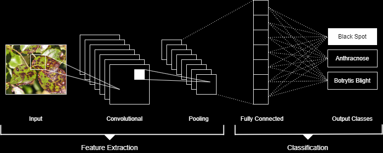

You’re an online retailer of flower and vegetable seeds and you want to drive customer retention by making your website more than just a point of sale.
Example 1
// Using computer vision to help your customers
The Challenge
{
}
The Opportunity
{
To offer your expertise on problems such as mould, infections, nutrient imbalances in the soil or watering related issues and provide personalised help to your users.
}
The Solution
{
To leverage computer vision to enable users who are growing flowers to be able to present pictures of their plants and have issues automatically diagnosed and offer specific advice on how to solve their problems.
}
The Method
{
By implementing a convolutional neural network (CNN) that is trained to recognise various problems that manifest visually on a plant the user’s problem picture can be analysed and remedies can be recommended.
CNNs are a supervised machine learning solution that are trained using input data that is classified according to type. In this case the different type classes would be the different diseases that a plant might suffer from. By inputting images of each possible disease type the CNN can ‘learn’ how to tell which one is by extracting the ‘features’ of the disease. Features are detected by the CNN passing a filter over the image.
These filters are designed to detect specific features like edges, textures, or colours. During the convolution operation of the CNN, the filters move across the input data, performing element-wise multiplications and aggregating the results through summation. This process enables the CNN to identify local patterns and capture spatial dependencies within the data. As these convolutional layers are stacked, higher-level filters emerge, detecting more complex and abstract features.
Pooling layers reduce the resolution of the feature maps while retaining the most relevant information. Pooling helps to make the CNN more robust to variations in position and scale, allowing it to focus on the essential features.
Once the CNN has extracted the features through the convolutional and pooling layers, the fully connected layers are responsible for converting these features into a format suitable for making classifications. The fully connected layers act as a classifier by applying a series of linear transformations and non-linear activation functions to the input data. These functions convert the raw output values into probabilities and these probabilities represent the likelihood of the input belonging to each class. The class with the highest probability is considered the predicted class for the input.
}